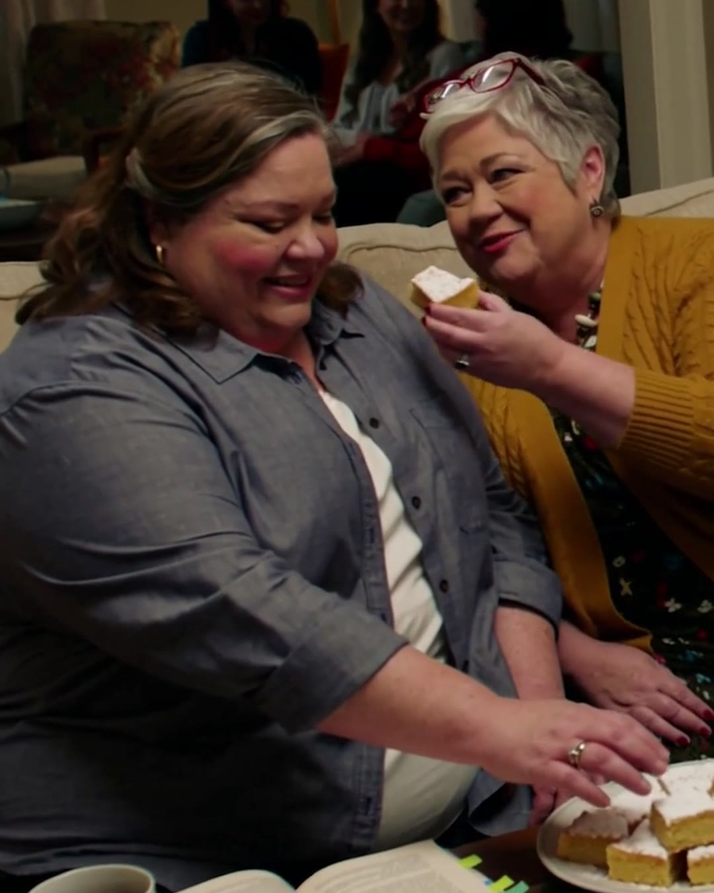
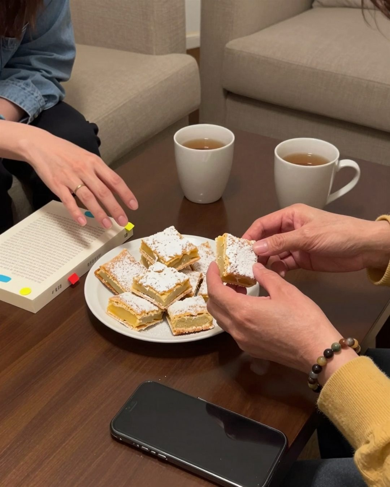
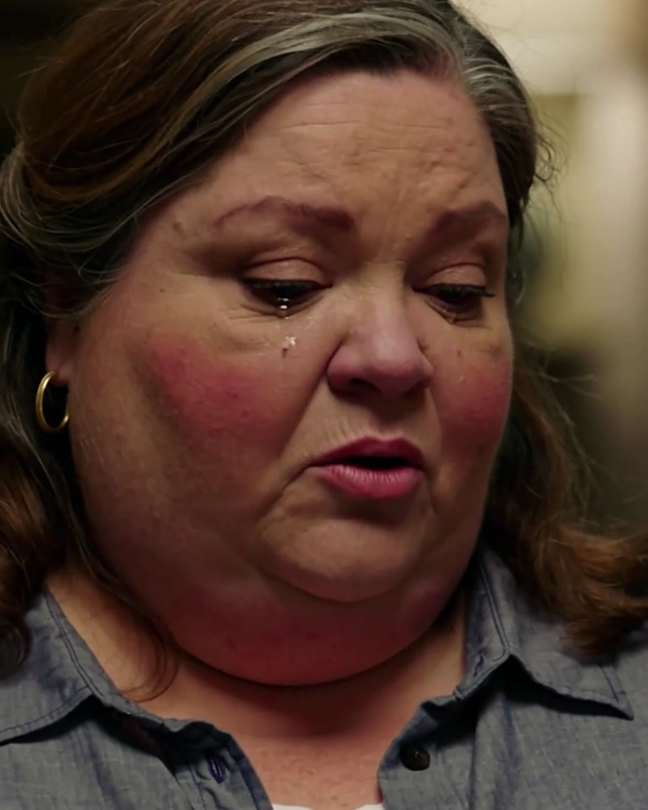
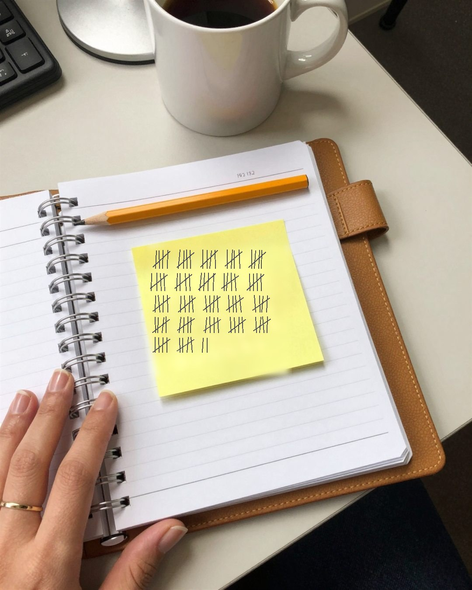
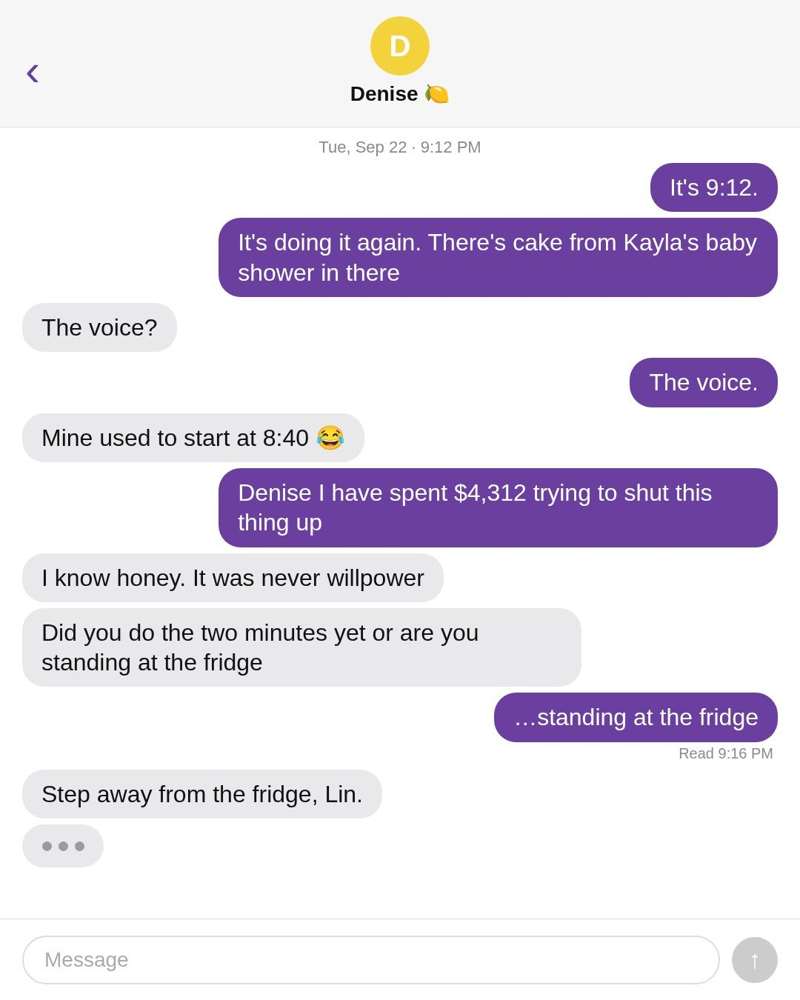
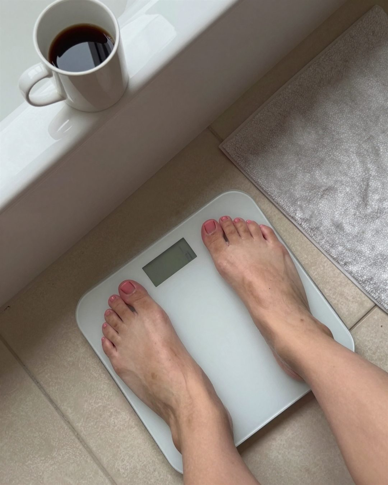
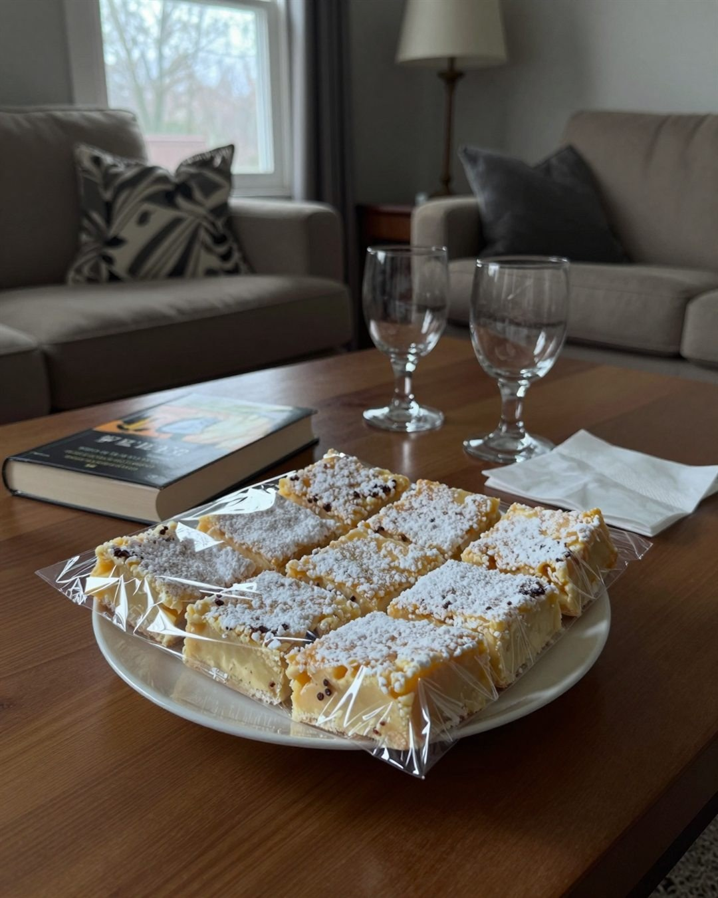

I counted how many times I thought about food before lunch. I ran out of paper at 112. Then I kept a secret my best friend almost didn't forgive.
Nine years of "I will if you will." One Thursday night, I didn't. Her text came at 11:48 p.m. Three words.

Thursday, October 15 · 8:05 p.m.
Denise was holding a lemon bar six inches from my face.
Her mother's recipe. Powdered sugar on her thumb. Seven women, one living room.
"I will if you will," she said.
She has said it every month for nine years. It isn't a question. It's a handshake.
My hand was already moving. That's the part I need you to understand. I never decided to reach for that plate. In nine years I never once decided.
And then it stopped.

See what stopped my hand ▸Like a dog reaching the end of a leash it didn't know it was on.
I waited for the voice. The one that says go on, it's book club, you were good all week, she made them herself.
Nothing came. The room was loud. Inside my head, for the first time I can remember, it was quiet.
"I don't want one," I said.
Denise laughed. Then she saw my face and stopped laughing, because my eyes had filled up and there was nothing I could do about it.

"Denise. I don't want it."
She froze. Lemon bar halfway to her mouth, powdered sugar drifting down onto her good cardigan.
Denise set the bar back on the plate. She didn't pick it up again. She didn't say one more word to me all night. Not even at the door.
At 11:48 p.m. my phone lit up on the nightstand. Three words. No lemon emoji. No capital letter.
"you left me."
She was right. I had.
I'd been hiding something from my best friend for 23 days. And all of it started with a yellow sticky note that is still folded inside my wallet.
112
Three weeks before that night, my grandson Owen slept over. He's four. He was eating cereal at the counter, watching me.
"Grandma, what are you looking for in there?"
I was standing in the open fridge. It was the fourth time since he'd sat down.
I laughed it off. But a four-year-old had counted, and in 54 years I never had.
So the next morning, Tuesday, September 22, I stuck a yellow sticky note inside the cover of my planner and made one pencil mark every time I caught myself thinking about food.
Not eating it. Thinking about it.
6:40 a.m. Eyes open. Is there coffee cake left. One.
In the shower I planned lunch. On the drive to work I planned a better one. By 9:00: 31 marks.
At 10:15 somebody put a birthday sheet cake in the break room. I did not eat any. I walked past that door five times and argued with a corner piece for forty minutes.
By 10:55: 74.
At 11:52 I ran out of sticky note.
112

Turn the noise down ▸One hundred and twelve times. Before noon.
And here is what turned my stomach, sitting at that desk: I had been "good" that morning. Oatmeal. Black coffee. No cake. On paper it was a perfect day.
That is what a perfect day sounded like from the inside.
I folded the note in half and did the thing I'd been avoiding for three years. I added up what the noise had cost me.
$4,312
I did it in the grocery store parking lot, on the back of an envelope from the glove box.
 See what finally worked ▸
See what finally worked ▸The points app: $239.
The meal-kit boxes: $1,104.
The gym I joined in January: $1,080. I went eleven times.
The shakes, the "metabolism" capsules, the 21-day reset, the online coach: $1,889.
I held the envelope in one hand and the sticky note in the other. And I finally saw it.
Every single thing on that envelope was a way of shouting over the 112. Count it. Box it. Sweat it out. Not one of them had ever tried to make it 111.
I cried so hard a woman knocked on my window to ask if I was okay.
But the mornings weren't even the worst of it. The worst was one specific minute, every single night.
9:12 p.m.
The stove clock said 9:12. It always said 9:12. Not hunger. A voice.
There's cake left. You were good all day. Just a sliver. Nobody will know.
For years, when it started, I texted the one person who never judged me for it.

Do the two minutes ▸Some nights she talked me out of my kitchen. Some nights I talked her out of hers. And once a month, at book club, we gave each other the night off.
That's what "I will if you will" really was. It was never about dessert. It was permission. Two women with the same voice in their heads, taking turns holding the door open.
Which is exactly why, on the night of the sticky note, I didn't text her.
If you know that 9 p.m. voice, see what I found that night instead ▸
What I typed instead
At 9:12 that Tuesday the voice started, right on schedule. I didn't open the fridge. I didn't text Denise.
I sat on the edge of the bathtub with the door shut and typed, word for word: why do I think about food all day.
Two words came back that I had never seen side by side.
Food noise.
Planning lunch during breakfast. Arguing with a sheet cake. Some people barely have any. Some of us have 112 before noon.
It had a name. It was never willpower. I read that line three times with the faucet running.
Underneath it was a two-minute questionnaire. My thumb was already on the X.
I've been sold to before. $4,312 worth. I knew there'd be a catch.
I sat on that bathtub hunting for the catch until almost midnight. This is what I found instead.
What it actually is
It's a doctor-guided GLP-1 program. The medication everybody has been whispering about, done properly.
You answer a two-minute questionnaire on your phone. A licensed US clinician reviews your history and prescribes only if it's right for you. Not everyone qualifies. If you don't, you're told straight away and you pay nothing.
That was the catch I'd been hunting for. There wasn't a fee hiding in it. The only risk was hearing "no."
If it's a yes, it's at your door the next day. No waiting room. The consultation is included.
And it isn't only the medication. Glycine, B12 and B6 are built in to protect muscle and ease the side effects. There's an app with a daily plan and a food log. You can message a clinician any time. And a body scanner tracks fat and muscle as two separate lines every week.
Then the price. $199 a month on the 3-month plan, down from $299, and FSA/HSA eligible. I got the envelope back out. $4,312 over 36 months is about $120 a month, spent on shouting. This was close to what I was already burning, pointed at the noise itself.
Cancel anytime, no fees. A 90-day money-back guarantee. And today, for Black Friday, the scanner ($350 value) comes free with every plan.
Two minutes, and you'll know. See if you qualify ▸
Why I didn't tell Denise
I answered the questions right there on the edge of the tub. I got a yes. The box was on my porch the next afternoon, before Mark got home.
And I told no one.
Not Mark, not at first. Especially not Denise.
Denise and I had started four different things together. We quit all four together, too. "I will if you will" works in both directions.
If this was going to be failure number five, I wanted to fail alone, with nobody holding the door.
So I hid the box in the hall closet and waited for it to stop working.
Day 4
I left half a sandwich on a plate.
 See if you qualify ▸
See if you qualify ▸I am 54 years old and I had never once left food on a plate.
Day 9. Mark looked up from his crossword at 9:40 p.m., over the top of those wire-rim glasses. "You haven't gotten up," he said. I hadn't noticed. The stove clock had gone straight past 9:12 without me.
Day 12. I told him everything. He read the sticky note for a long time. Then he put it back in my palm and closed my fingers around it.
Day 21. A Tuesday. I stuck a fresh yellow note inside my planner and counted again. Same pencil, same rules.
At noon I looked down and the note was almost bare.
I had forgotten I was counting.
One morning was all it took me to see it. Answer the same 2-minute questionnaire I did ▸
Every Monday, before coffee, I step on the body scanner that came with the plan. It draws fat and muscle as two separate lines, not one number. A slow week used to be the week I quit. Now I can see why it was slow.

Get the free scanner ▸Day 23 was book club. You know what happened to my hand.
What you don't know is what I did about those three words on my nightstand.
"you left me."
I typed six replies and deleted all six.
At 7:10 the next morning I was standing on Denise's porch.
She opened the door in her robe. Past her shoulder I could see the coffee table. The lemon bars were still sitting there under plastic wrap. All of them.
She hadn't eaten one either.

"Nine years," she said. "You couldn't have warned me?"
I didn't apologize. I took the sticky note out of my wallet and put it in her hand.
She counted the marks. I watched her lips move.
"What is this?"
"One morning. Before noon. I wasn't eating, Denise. I was only thinking about it."
She was quiet for so long that the porch light clicked off on its timer.
Then she said, in a voice I had never heard out of her:
"Mine would need a second sheet."
We sat on her front step in the cold for an hour. I told her all of it.
"You went without me," she said.
"I went first," I said. "That's different."
She wiped her face with the sleeve of her robe. Then she held out her hand for my phone.
It's the same two minutes Denise did on her front step. See if you qualify ▸
The plate, last week
Not everyone gets a yes. Denise knew that when she handed my phone back.
Book club met again on November 19. Denise brought the lemon bars. She always will. It's her mother's recipe.
She set the plate on the coffee table, looked straight at me, and said it.
"I will if you will."
I took one. So did she. We each ate about half and forgot the rest, the way other people apparently do every day of their lives.
When the night ended there were lemon bars left on that plate. Not once in nine years had that happened.
At 9:12 that night my phone lit up. The lemon emoji was back.
"Lin. It's 9:12. Listen."
That was the entire message. I knew exactly what she wanted me to hear.
I stood in my dark kitchen and listened.
Nothing.
Find out if you can turn the noise down too ▸
If you've read this far
You already know whether you have the noise. If you aren't sure, a sticky note and one morning will tell you.
Here is everything I wish somebody had told me three years and $4,312 ago:
- Doctor-guided GLP-1 program, prescribed only if a licensed US clinician says it's right for you
- Glycine, B12 and B6 built in · app with daily plan · unlimited clinician messages
- $199/month on the 3-month plan (regular $299), consultation included, FSA/HSA eligible
- Cancel anytime, no fees · 90-day money-back guarantee
- Black Friday: the body scanner ($350 value) is free with every plan